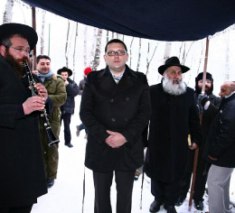

Chassidic Warmth Melts Freezing Europe
Europe’s record freezing temperatures have claimed hundreds of lives, snarled traffic and trapped tens of thousands of residents in remote villages across Serbia and Romania. * Many of the Rebbe’s shluchim have had to contend with the unusually cold weather. * Beis Moshiach spoke to a number of them about how they are managing to warm things up.

If that was not enough, snow blanketed Rome for the first time in 26 years. Colorful Europe had turned into a black, white and gray photograph.
If you were to ask the shluchim in Europe about how they deal with zero degrees Celsius temperature or running a Chabad house or a school on snow days, they would laugh. To them, zero is nearly spring weather; when it reaches thirty degrees below zero, then some activities are canceled. In fact, although the cold wave surprised everyone, the schools and Chabad houses continued to operate (almost) as usual.
WARSAW, POLAND
Minus twelve Celsius and the sun is shining
The extreme cold spell that Europe recently experienced broke new records even by European standards. The cold began in Eastern Europe (Ukraine, Russia, Moldova, and Belarus) and soon spread to central and Western Europe, taking many lives.
Rabbi Nechemia Segal, shliach in Warsaw, walked from his home to shul on the Shabbos before we spoke. It is a fifty minute walk which he did in freezing cold – ten degrees below zero. He did not consider this unusual.
When I asked him to describe the weather as he looked out of his Chabad house window, he said, “It’s dry, no snow, and no ice, there is a cloudless sky and it’s freezing, between 10-12 degrees below zero. The sun is shining as though it’s the middle of the summer.”
Rabbi Segal arrived in Poland five years ago. At first he worked in the yeshiva. Now he works with local people and the many tourists who visit Poland year-round.
His main role is, paraphrasing the Rebbe’s words to Rabbi Groner a”h of Australia, “to conquer Poland with the power of Torah.” He is responsible for the Kollel which offers shiurim for young and old, for the Sunday school, and for visits to offices and trips throughout Poland, as well as providing answers to any question related to Jewish life. He also opened a Chabad house with a shul for local Israelis.
Programming continues as usual, despite the cold. How does he manage?
“We dress warmly, get in the car, and go to shiurim and weekday activities.”
Most of Rabbi Segal’s target audience is comprised of traditional Jews and those who recently became more religiously observant. They do not seem put out by the effort required to get to shul as they too walked there on Shabbos, in order to be warmed with the light of Shabbos and Chassidus.
ULM, GERMANY
A two hour trip in minus 25 degrees weather
In Germany, in central Europe, the temperature dropped to 25 degrees below zero! Rabbi Shneur Zalman Trebnik, shliach to the city of Ulm, was in Eretz Yisroel this week for his mother’s yahrtzait. He combined this with a fundraising evening for the building of a mikva in his city, in her memory.
In his talk that evening, he said, “When we came to Ulm twelve years ago, the head of the k’hilla asked me how I envisioned the city ten years hence. I hesitantly said that I hoped we would have a minyan on Shabbos. Nine of the people present burst out laughing and the other two managed not to laugh in my face.
“Reality far exceeded my expectations. Today, the shul is too small for the dozens of people who daven there every Shabbos. This is in addition to shiurim and a growing preschool. With Hashem’s help, we will soon be having a minyan every Monday and Thursday. More than ten women travel two hours each way, every month, to use a mikva. Yesterday, it was 25 degrees below zero. In the summer the sun sets very late. Shabbos is over after ten at night and the women return towards morning. There have also been unfortunate instances in which a woman returned without using the mikva because the place isn’t well maintained and the water was frozen.
“With Hashem’s help a mikva will be built here; the question is how,” Rabbi Trebnik concluded. “I hope that we won’t have to compromise due to lack of funds, but will be able to build a beautiful mikva as the Rebbe wants. I give this over to you – it depends on your generosity.”
VIENNA, AUSTRIA
Ships trapped in ice
Thousands of travelers, trying to escape the cold for warmer climes, were stranded in airports all over Europe. Heathrow Airport, the busiest airport on the continent, canceled about 400 flights due to the heavy snowfall on the runways and concern over dense fog. Holland’s large Schiphol Airport canceled dozens of flights.
In western Austria, where the temperature sank to minus fourteen, a technical problem left 10,000 homes without heat. I spoke with Rabbi Yisroel Netanelov, shliach in Vienna and rabbi of the “Beis HaLevi – Chabad Community Center.” Despite the cold and the fifteen centimeters (six inches) of snow, he was relaxed and told me, “Everything is quiet and calm now. The snow actually broke the cold snap; it’s soft and nice. The snow that makes life difficult is the snow followed by rain. It turns into mud, is dirty, slippery and dangerous. People are enjoying winter sports now and we are continuing our usual shlichus schedule.”
Rabbi Netanelov and his wife arrived in Vienna five years ago in order to run Kollel Beis HaLevi and the Talmud Torah for girls. Like all shluchim, they are busy with the education of the present and future generations to Torah and mitzvos and hiskashrus to the Rebbe. The snow and ice didn’t stop eighty children from attending the “Avos U’Banim” Sunday program.
Rabbi Netanelov focuses his attention mainly on the Bucharian community which is the largest in Vienna; however, his circle of influence includes Ashkenazim and Sephardim of all backgrounds as well as Jewish students.
ALMA ATA, KAZAKHSTAN
When the sh’chita knife is frozen
Moving from west to east, I had a conversation with Rabbi Elchonon Cohen, shliach in Kazakhstan, where they are shivering in the cold and warming up with Chassidus. In Alma Ata, where Reb Levi Yitzchok (the Rebbe’s father) is buried, the temperature reached 28 degrees below zero.
“It is not the cold that is unusual this year; what’s unusual is the length of the cold spell,” says Rabbi Cohen.
Every week, Rabbi Cohen shechts chickens and cows so that Jews will have kosher meat to eat. The car, which uses diesel fuel, takes hours to heat up before a trip (as the fuel must first be melted). While driving, despite the heat blowing on the windows, the windshield freezes and impedes visibility. Sometimes, when he is lucky, a little hole remains in the ice through which he can see.
When he arrives at the slaughterhouse, in three or four layers of clothing, he has to thaw out his hands for a while in order to regain sensation in his fingers and the ability to check the knife properly.
Rabbi Cohen said that due to the extreme cold, the water and blood freeze on the sh’chita knife and he has to hold it under warm water after he slaughters each chicken and cow.
When I asked him whether the schools continue to function he said, “In Kazakhstan, as long as the temperature does not pass 35 degrees below zero, it is still considered normal and schools and businesses function as usual. We haven’t had it as cold as that yet and so things continue as always. In Ust-Kamenogorsk, where the shliach Rabbi Shlomo Turenheim and his family live, the temperature dipped below 35. Although the schools, stores and offices were closed, their preschool stayed open. It made a big kiddush Hashem.”
As for the children, they learn to dress properly for the weather and they manage. When it’s a “normal” cold (i.e. until it reaches minus thirty) they still go outside to play. They stay outside for half an hour and then come back in.
In Krivoy Rog in central Ukraine, despite the heavy snowfall that blanketed the city, over a hundred men, women and children packed the new “Chabad Lubavitch Ohr Avner” events hall and celebrated the opening of the new building. The preschool was founded over a decade ago and has earned a good reputation thanks to the high scholastic level and warm atmosphere. Until recently it was housed in one of the wings of the school and was very crowded. Now, it has finally moved into its own permanent home in a spacious, beautiful building which also houses a sports complex. Mr. Gennady Korban, a member of Dnepropetrovsk’s Jewish community’s board of trustees, was a key sponsor of the 1.5 million dollar project. The building contains separate areas for preschool classes, a modern early development center, and a beautiful school auditorium that is outfitted with the most up to date audio-video equipment, which will also serve as an events hall.
POLTAVA, UKRAINE
A wedding in the snow
When I spoke with Rabbi Yosef Segal, shliach to Poltava, the weather in his city was relatively “mild.” It was minus twelve degrees.
“We had colder days last week, when the temperature was between 20-25 degrees below zero. People could not remain outside for more than twenty minutes. However, not only doesn’t the cold limit our activities, but when people come to the Chabad house, they feel the warmth and light of Chassidus.”
Most of the schools in Ukraine were closed during this cold spell. In previous years, they may have continued as usual even when it was 20 degrees below zero, but lately, either people are more pampered or they have come to realize that minus 20 degrees can be dangerous. The Ohr Avner mosdos in Poltava were closed for a few days.
Despite the bitter cold, Rabbi Segal continues to go every week, 115 kilometers away, to Haditch, to the gravesite of the Alter Rebbe. Nearly two months ago, a large group went to Haditch in order to hold a chuppa there. The couple is very well-to-do and respected among the Jews of Poltava. They had a civil marriage in Cyprus years ago and when they came to Poltava they became involved with the shliach and his programs.
With the construction of a mikva in Poltava, the couple became even more interested. They decided to observe the laws of family purity and have their wedding at the Alter Rebbe’s gravesite on 24 Teves. When Rabbi Segal wondered how he could fit a grand wedding into his busy day of farbrengens etc., the couple told him they weren’t interested in a grand affair. All they wanted was an authentic Jewish experience.
That is why the community went to Haditch in the freezing cold and set up a chuppa in the snow and ice. A group of Lubavitcher Chassidim from Eretz Yisroel participated in the moving wedding. Not only didn’t the frosty chuppa cool off the Jews of Poltava, but another eight families decided to join them in their observance of family purity and asked the shliach to marry them off properly according to Halacha.
Tzfasman. "Chassidic Warmth Melts Freezing Europe." Beis Moshiach, no. 827 (March 14, 2012).